Contents
type Egalisation_Histogramme.m
type Convolution.m
type Rehaussement_Contour.m
type Binariser.m
type Fermeture.m
type Compter_Monnaie.m
type Calculer_TFD.m
function [ ImageEgalisee ] = Egalisation_Histogramme( Image )
%EGALISATION_HISTOGRAMME Applique une égalisation d'histogramme à une image
% (notes de cours "Filtrage spatial d'images, page 20)
% Histogramme cumulatif normalisé de l'image de départ
Histo = imhist(Image);
T = cumsum(Histo)/sum(Histo);
% Création de l'image finale
[m,n] = size(Image);
I = ones(m,n);
% Égalisation
for i = 1:m
for j = 1:n
pixel = Image(i,j) + 1;
I(i,j) = T(pixel);
end
end
ImageEgalisee = I;
end
function [ ImageFiltree ] = Convolution( Image, Masque )
%CONVOLUTION Renvoit la convolution d'une image et d'un masque
% (notes de cours "Filtrage spatial d'images, page 20)
% Déterminer les index pour le padding
[k,p] = size(Masque);
k = (k-1)/2;
p = (p-1)/2;
% 0 padding
% padarray: https://www.mathworks.com/help/images/ref/padarray.html
ImageRembouree = padarray(Image, [k, p], 0, 'both');
ImageFiltree = zeros(size(Image));
[h, w] = size(Image);
for i = 1:h
for j = 1:w
ImageFiltree(i,j) = sum(sum(double(ImageRembouree(i:i+2*k,j:j+2*p)) .* Masque));
end
end
end
function [ imageRehaussee, Laplacien ] = Rehaussement_Contour( Image, K, type)
%REHAUSSEMENT_CONTOUR Summary of this function goes here
% Detailed explanation goes her
% Masque Gaussien
G = [1 2 1;
2 4 2;
1 2 1] /16;
% MasqueLaplacien (Type 1 est celui de l'énnoncé)
if(type == 1)
L = [-1 -1 -1; -1 8 -1; -1 -1 -1];
elseif(type == 2)
L = [1 1 1; 1 -8 1; 1 1 1];
elseif(type == 3)
L = [0 1 0; 1 -4 1; 0 1 0];
elseif(type == 4)
L = [0 -1 0; -1 4 -1; 0 -1 0];
else
L = [-1 -1 -1; -1 8 -1; -1 -1 -1];
end
% Algorithme de rehaussement de contour
Ig = Convolution(Image, G);
Laplacien = Convolution(Ig, L);
imageRehaussee = Ig + K .* Laplacien;
% « Attention, le laplacien peut renvoyer des valeurs négatives »
% Voir première réponse à: https://www.mathworks.com/matlabcentral/answers/31927-help-how-to-replace-all-the-negative-values-in-an-array-with-zeros
Laplacien(Laplacien<0) = 0;
imageRehaussee(imageRehaussee < 0) = 0;
end
function [ ImageBinaire ] = Binariser( Image, Seuil )
%BINARISER Summary of this function goes here
% Detailed explanation goes here
% Implémentez une fonction Binariser qui met à 0 tous les pixels se trouvant
% en dessous du seuil, et à 255 tous les pixels se trouvant sur le seuil ou au dessus.
% Donne false=0 donc 0*255 = 0 OU true=1 donc 1*255 = 255
ImageBinaire = (Image >= Seuil) * 255;
end
function [ ImageFermee ] = Fermeture( Image, ShapeType, Parameter)
%FERMETURE Summary of this function goes here
% Detailed explanation goes here
% Effectuez une fermeture sur l’image binaire afin de fermer les trous
% strel: https://www.mathworks.com/help/images/ref/strel.html
elementStructurant = strel(ShapeType, Parameter);
% imclose: https://www.mathworks.com/help/images/ref/imclose.html
ImageFermee = imclose(Image, elementStructurant);
end
function [ montant ] = Compter_Monnaie( Image )
%COMPTER_MONNAIE Summary of this function goes here
% Detailed explanation goes here
% "ignorer les pièces de 1 dollar, 50 et 1 cent qui sont absentes. "
% Donc, nous avons des 0,05$, 0,10$, 0,25$ et 2,00$.
% Nos éléments structurants sont des disques avec des rayons de
% 90, 110, 120, 140 et 200.
% imerode : https://www.mathworks.com/help/images/ref/imerode.html
% imdilate: https://www.mathworks.com/help/images/ref/imdilate.html
% Différences: https://www.mathworks.com/matlabcentral/answers/uploaded_files/8310/morph1.jpg
% bwlabel: https://www.mathworks.com/help/images/ref/bwlabel.html
% Calculer le nombre total de pièeces
nombreTotal = length(unique(bwlabel(imerode(Image, strel('disk', 90)))));
% Calculer le nombre total de 0,10$
nombre10cents = nombreTotal - length(unique(bwlabel(imerode(Image, strel('disk', 110)))));
nombreRestant = nombreTotal - nombre10cents;
% Calculer le nombre total de 0,05$
nombre5cents = nombreRestant - length(unique(bwlabel(imerode(Image, strel('disk', 120)))));
nombreRestant = nombreRestant - nombre5cents;
% Calculer le nombre total de 0,25$
nombre25cents = nombreRestant - length(unique(bwlabel(imerode(Image, strel('disk', 140)))));
nombreRestant = nombreRestant - nombre25cents;
% Calculer le nombre total de 2$
nombre2dollars = nombreRestant - length(unique(bwlabel(imerode(Image, strel('disk', 200)))));
montant = nombre5cents*0.05 + nombre10cents*0.1 + nombre25cents*0.25 + nombre2dollars*2;
end
function [ TFD_image_reel ] = Calculer_TFD( image )
%CALCULER_TFD Summary of this function goes here
% Detailed explanation goes here
% 1) Calculer la TFD de l'Image avec la fonction fft2
% fft2: % https://www.mathworks.com/help/matlab/ref/fft2.html
TFD_image = fft2(image);
% 2) Centrer la TFD avec fftshift
% fftshift: https://www.mathworks.com/help/matlab/ref/fftshift.html
TFD_image_centre = fftshift(TFD_image);
% 3) Normaliser la TFD
sizeX = size(TFD_image_centre, 1);
sizeY = size(TFD_image_centre, 2);
TFD_image_norm = TFD_image_centre/(sizeX*sizeY);
% 4) Récupérer la valeur réel avec abs
TFD_image_reel = abs(TFD_image_norm);
end
Exercice 1 (5 points): Rehaussement d'image
clear all;
close all;
clc;
Image = imread('theArtist.png');
ImageEgalisee = Egalisation_Histogramme(Image);
figure('Name' , 'Question 1 - Egalisation d histogrammes (Moins sombre)');
subplot(2,2,1);
imshow(Image);
title('Image originale sombre');
subplot(2,2,3);
imhist(Image);
title('Histogramme image originale');
grid on;
subplot(2,2,2);
imshow(ImageEgalisee);
title('Image égalisée');
subplot(2,2,4);
imhist(ImageEgalisee);
title('Histogramme de l image égalisée');
grid on;
MasqueGaussien = [1 2 1 2 1;
2 4 8 4 2;
1 8 18 8 1;
2 4 8 4 2;
1 2 1 2 1] /90;
ImageFiltree = Convolution(ImageEgalisee, MasqueGaussien);
figure('Name' , 'Question 2&3 - Convolution Gaussienne de l image (Moins de bruit)');
subplot(2,2,1);
imshow(ImageEgalisee);
title('Image égalisée');
subplot(2,2,3);
imhist(ImageEgalisee);
title('Histogramme de l image égalisée');
grid on;
subplot(2,2,2);
imshow(ImageFiltree);
title('Image floutée');
subplot(2,2,4);
imhist(ImageFiltree);
title('Histogramme de l image floutée');
grid on;
[ imageRehaussee, Laplacien ] = Rehaussement_Contour( ImageEgalisee, 1.2, 1 );
figure('Name', 'Question 4 - Resultat de rehaussement et le Laplacien');
subplot(2,3,1);
imshow(ImageFiltree);
title('Image floutée mais dégradée');
subplot(2,3,4);
imhist(ImageFiltree);
title('Histogramme de l image floutée');
grid on;
subplot(2,3,2);
imshow(imageRehaussee);
title('Résultat du rehaussement');
subplot(2,3,5);
imhist(imageRehaussee);
title('Histogramme du résultat');
grid on;
subplot(2,3,3);
imshow(Laplacien);
title('Le Laplacien');
subplot(2,3,6);
imhist(Laplacien);
title('Histogramme du Laplacien');
grid on;
[ imageRehaussee2, Laplacien2 ] = Rehaussement_Contour( ImageEgalisee, 1.2, 4 );
[ imageRehaussee3, Laplacien3 ] = Rehaussement_Contour( ImageEgalisee, 0.2, 1 );
[ imageRehaussee4, Laplacien4 ] = Rehaussement_Contour( ImageEgalisee, 2.4, 1 );
figure('Name', 'Question 5 - Tests');
subplot(1,4,1);
imshow(imageRehaussee);
title('Masque original k=1,2');
subplot(1,4,4);
imshow(imageRehaussee2);
title('Masque différent k=1,2');
subplot(1,4,2);
imshow(imageRehaussee3);
title('Masque original k=0,2');
subplot(1,4,3);
imshow(imageRehaussee4);
title('Masque original k=2.4');
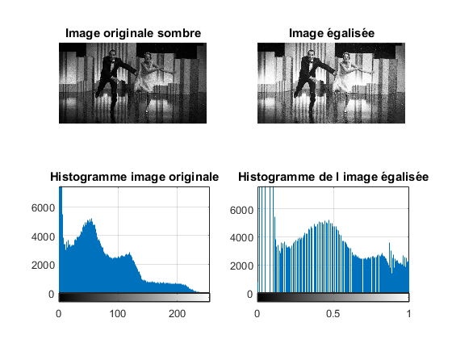 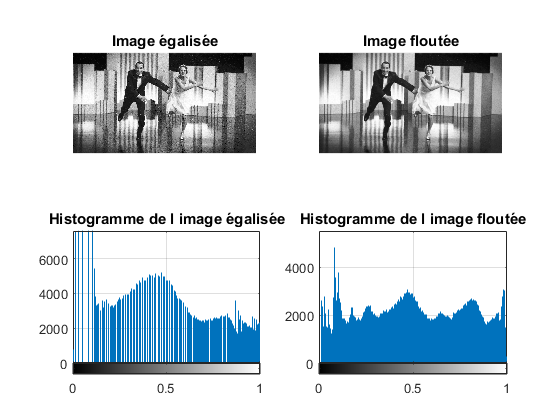 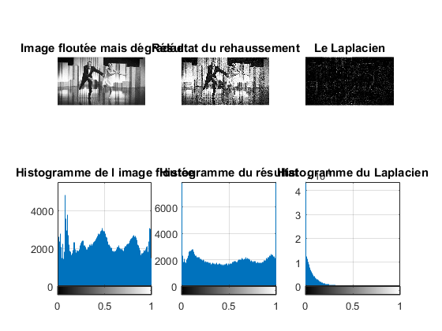 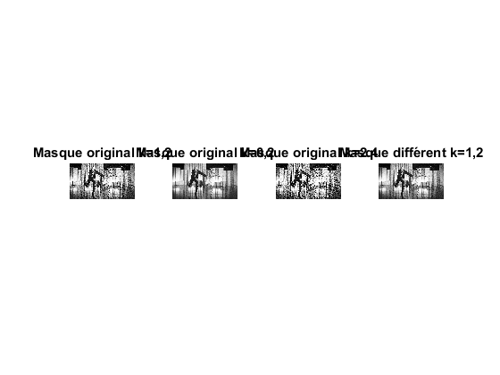
Exercice 2 (5 points): Compteur de monnaie
clear all;
close all;
clc;
Image = imread('pieces.jpg');
ImageGris = rgb2gray(Image);
figure('Name', 'Question 1 - Niveau de gris');
subplot(1,2,1);
imshow(Image);
title('Image originale');
subplot(1,2,2);
imshow(ImageGris);
title('Image en gris');
ImageBinaire = Binariser(ImageGris, 250);
ImageBinaireInverse = 255 - ImageBinaire;
figure('Name', 'Question 2 - Binariser');
subplot(1,2,1);
imshow(ImageBinaire);
title('Couleurs originales');
subplot(1,2,2);
imshow(ImageBinaireInverse);
title('Couleurs inversées');
ImageFermee1 = Fermeture( ImageBinaireInverse, 'square', 1);
ImageFermee2 = Fermeture( ImageBinaireInverse, 'sphere', 1);
ImageFermee3 = Fermeture( ImageBinaireInverse, 'diamond', 1);
figure('Name', 'Question 3 - Fermeture avec des différentes formes pour l élément structurant (SE)');
subplot(1,3,1);
imshow(ImageFermee1);
title('SE: Carré');
subplot(1,3,2);
imshow(ImageFermee2);
title('SE: Sphère');
subplot(1,3,3);
imshow(ImageFermee3);
title('SE: Diamand');
ImageFermee4 = Fermeture( ImageBinaireInverse, 'sphere', 1);
ImageFermee5 = Fermeture( ImageBinaireInverse, 'sphere', 10);
figure('Name', 'Question 3 - Fermeture avec une sphère avec un rayon différent');
subplot(1,2,1);
imshow(ImageFermee4);
title('r = 1');
subplot(1,2,2);
imshow(ImageFermee5);
title('r = 10');
disp('Montant total: ')
format bank
Compter_Monnaie(ImageFermee5)
Montant total:
ans =
5.65
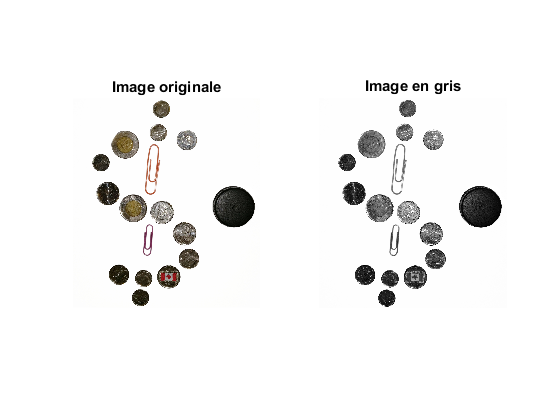 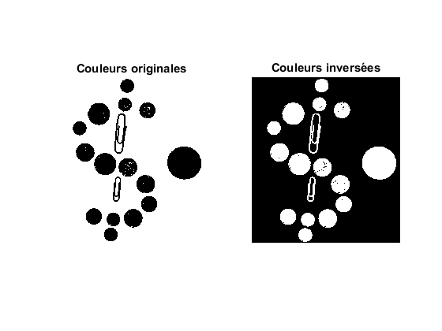 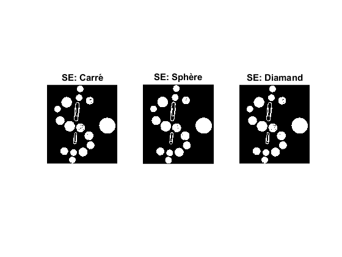 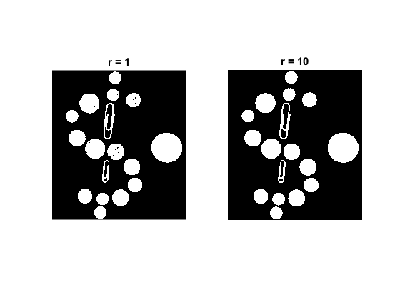
Exercice 3 (3.5 points): Transformée de Fourier 2D
clear all;
close all;
clc;
ImageVert = imread('Barres_Verticales.png');
ImageHoriz = imread('Barres_Horizontales.png');
ImageObli = imread('Barres_Obliques.png');
figure('Name' , 'Question 1 - Des barres...');
subplot(1,3,1);
imshow(ImageVert);
title('verticales')
subplot(1,3,2);
imshow(ImageHoriz);
title('horizontales')
subplot(1,3,3);
imshow(ImageObli);
title('obliques')
TFD_vert = Calculer_TFD(ImageVert);
TFD_horz = Calculer_TFD(ImageHoriz);
TFD_obli = Calculer_TFD(ImageObli);
figure('Name' , 'Question 2 - Images des barres et de leurs histogrammes');
subplot(2,3,4);
imshow(log(1 + TFD_vert),[]);
subplot(2,3,5);
imshow(log(1 + TFD_horz),[]);
subplot(2,3,6);
imshow(log(1 + TFD_obli),[]);
subplot(2,3,1);
imshow(ImageVert);
title('verticales')
subplot(2,3,2);
imshow(ImageHoriz);
title('horizontales')
subplot(2,3,3);
imshow(ImageObli);
title('obliques')
ImageVertTourne = imrotate(ImageVert, 70, 'bilinear', 'crop');
TFD_VertTourne = Calculer_TFD(ImageVertTourne);
figure('Name' , 'Question 3');
subplot(2,1,2);
imshow(log(1+TFD_VertTourne),[]);
subplot(2,1,1);
imshow(ImageVertTourne);
title('Barres verticales tournées')
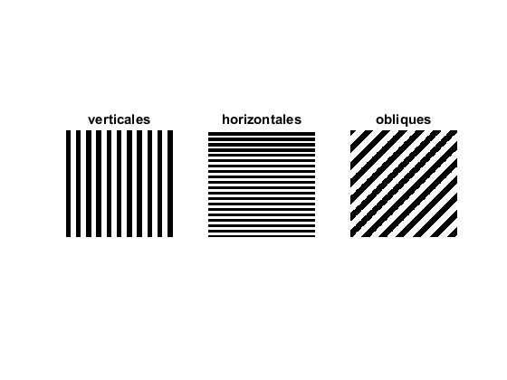 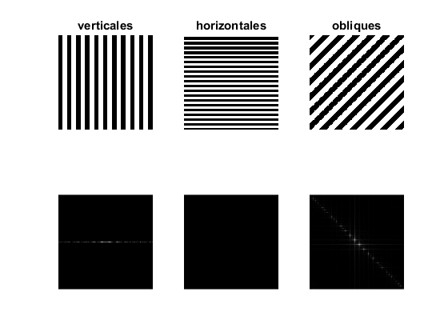 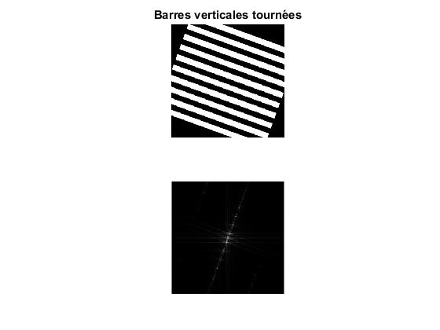
Exercice 4 (6.5 points): Filtrage spectral
clear all;
close all;
clc;
imageMaillot = imread('maillot.png');
TFD_maillot = fft2(imageMaillot);
TFD_maillot_centre = fftshift(TFD_maillot);
sizeX = size(TFD_maillot_centre, 1);
sizeY = size(TFD_maillot_centre, 2);
TFD_maillot_norm = TFD_maillot_centre/(sizeX*sizeY);
figure('Name' , 'Question 1 - TFD du maillot');
subplot(1,2,1);
imshow(imageMaillot);
title('Image originale');
subplot(1,2,2);
TFD_maillot_reel = abs(TFD_maillot_norm);
imshow(log(1+TFD_maillot_reel),[]);
title('Histogramme');
figure('Name' , 'Question 2 - Identification des textures');
schemaMaillot = imread('Schema_maillot.png');
imshow(schemaMaillot);
h1 = fspecial('gaussian', size(imageMaillot), 1);
h2 = fspecial('gaussian', size(imageMaillot), 2);
h3 = fspecial('gaussian', size(imageMaillot), 3);
maillot_filtre1 = imfilter(imageMaillot, h1);
maillot_filtre2 = imfilter(imageMaillot, h2);
maillot_filtre3 = imfilter(imageMaillot, h3);
figure('Name' , 'Question 3 - Faire disparaitre les hachures de la poche');
subplot(1,4,1);
imshow(imageMaillot);
title('Sans filtre');
subplot(1,4,2);
imshow(maillot_filtre1);
title('Sigma = 1');
subplot(1,4,3);
imshow(maillot_filtre2);
title('Sigma = 2');
subplot(1,4,4);
imshow(maillot_filtre3);
title('Sigma = 3');
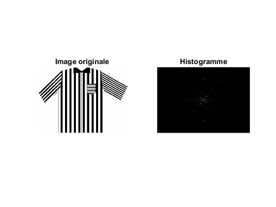 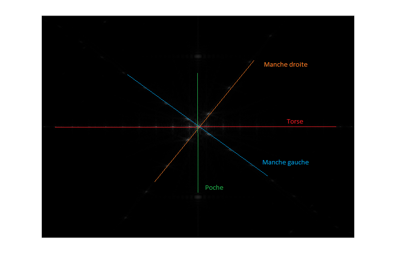 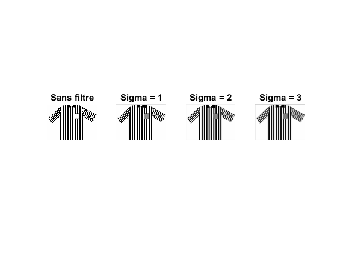